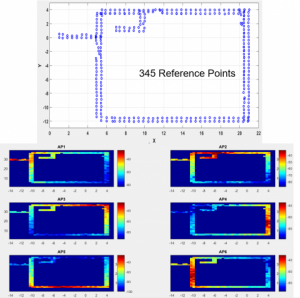

Autonomous Robot
Collecting data by hand is extremely tedious and introduces position errors. Instead, we built a custom robot to autonomously collect data for the site survey. A RPLIDAR A2 and an Intel D415 RGBD camera are connected to an NVIDIA Jetson TX2, where they are used for simultaneous localization and mapping (SLAM). An autonomous navigation algorithm takes the produced map and computes the shortest path to sample all positions in a floor. The robot navigates to each position using OpenCR and DYNAMIXEL motors. After stopping at a position, the robot broadcasts its current position via a smartphone mounted at the top. Subsequently, the routers collect the position data from the robot.
Wireless Fingerprinting Databases
We have collected many Wi-Fi and Bluetooth datasets across numerous buildings. Some datasets contain received signal strength indicators (RSSI) and signal quality indicator (SQI), while others contain channel state information (CSI).

Wireless Localization Algorithms
State-of-the-art wireless localization algorithms are not accurate enough for our purposes. Thus, we have developed our own localization algorithms, ranging from simple algorithms like KNN to complex algorithms like CNN.
- Minh Tu Hoang, , “WiFi fingerprinting based indoor localization with autonomous survey and machine learning” UVicSpace, ETD (Electronic Theses and Dissertations)
- M.T. Hoang, B. Yuen, X. Dong, T. Lu, R. Westendorp and K. Reddy, “Semi-Sequential Probabilistic Model for Indoor Localization Enhancement,” IEEE Sensors Journal, 2020
- M.T. Hoang, B. Yuen, X. Dong, T. Lu, R. Westendorp and K. Reddy, “Recurrent Neural Networks for Accurate RSSI Indoor Localization,” IEEE Internet of Things Journal, 2019
- M.T. Hoang, Y. Zhu, B. Yuen, T. Reese, X. Dong, T. Lu, R. Westendorp and M. Xie, “Soft Range Limited K-Nearest Neighbours Algorithm for Indoor Localization Enhancement,” IEEE Sensor Journal, pp. 10208-10216, Dec. 2018